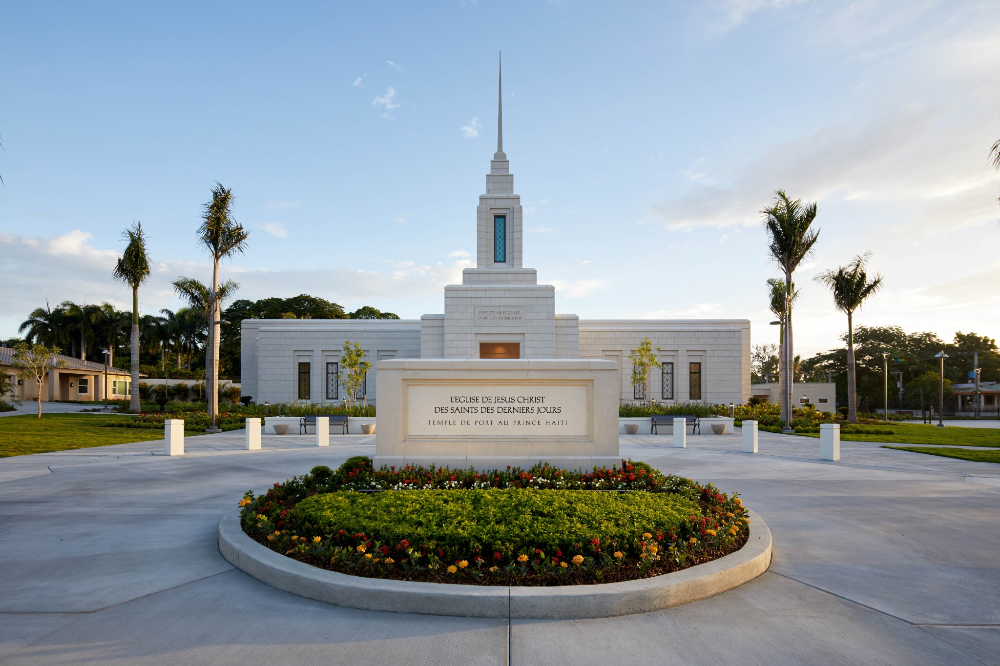
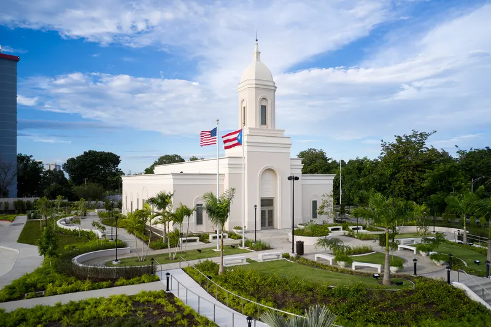
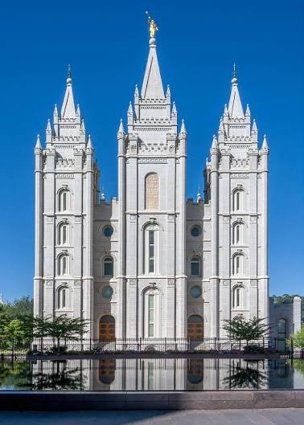

Temple Album
☰
Home
Old
New
Large
Small
Temple Album
San Diego, California
San Diego, California
Washington, D.C.
Lagos Nigeria
Santo Domingo, Dominican Republic

Haiti

San Juan, Puerto Rico

Salt Lake City, Utah
mexico